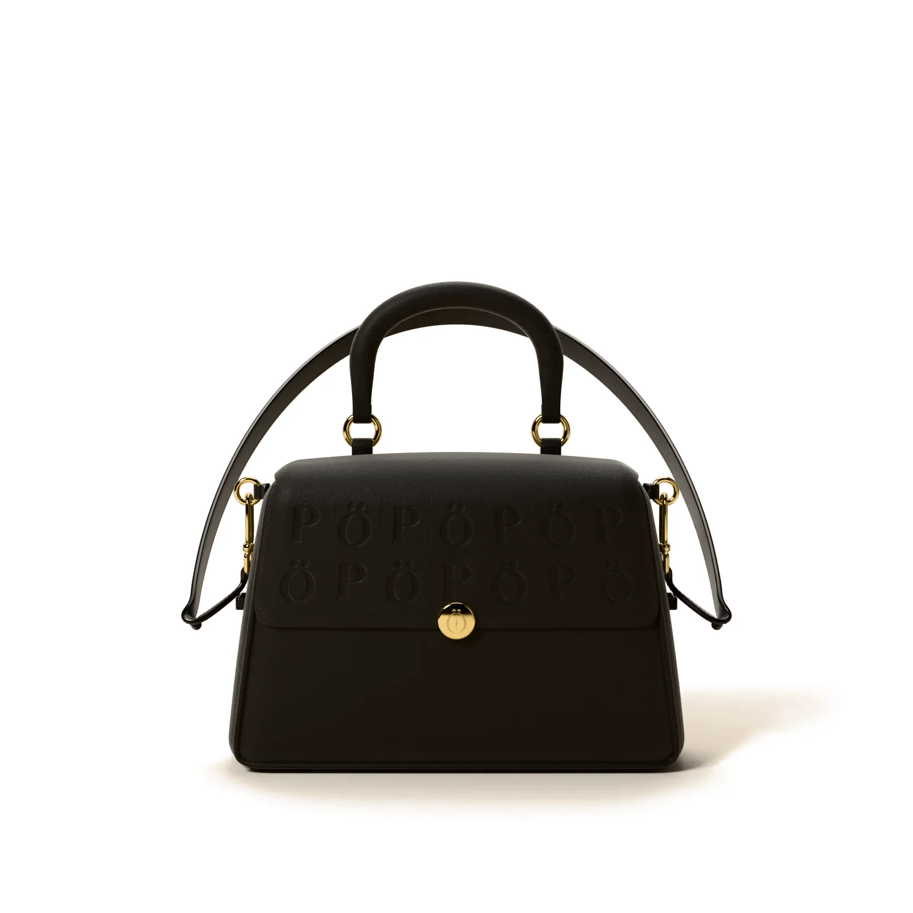
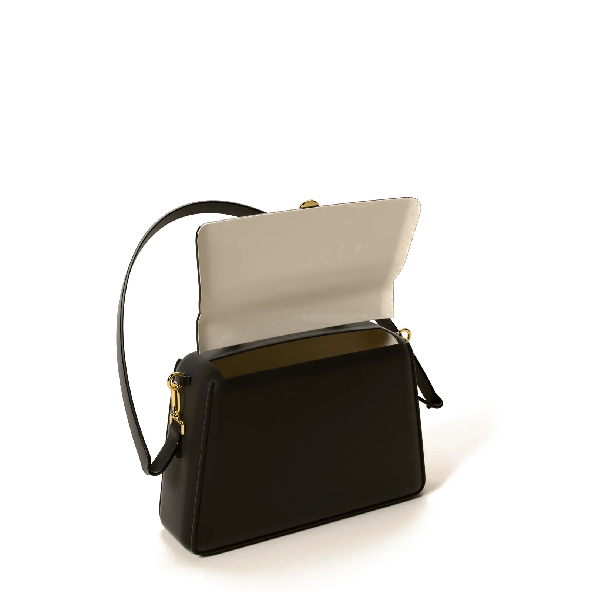
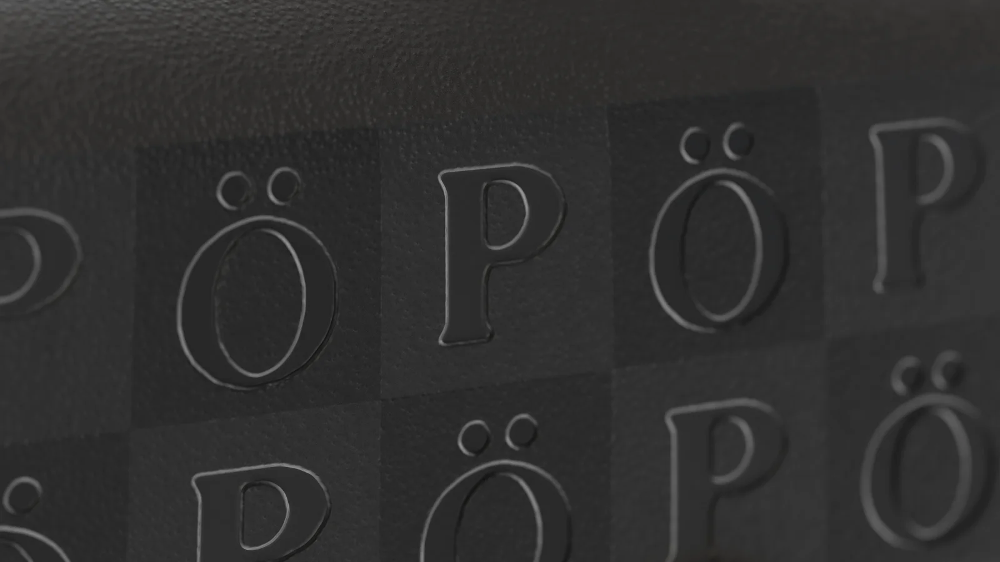
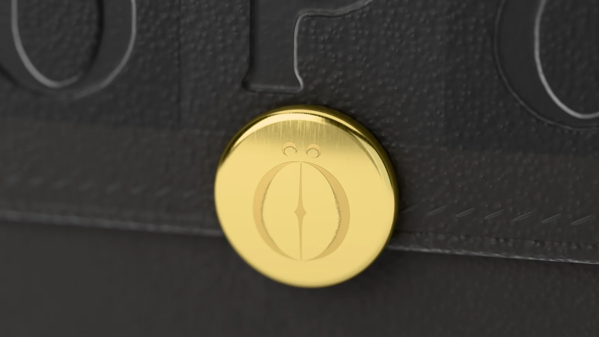
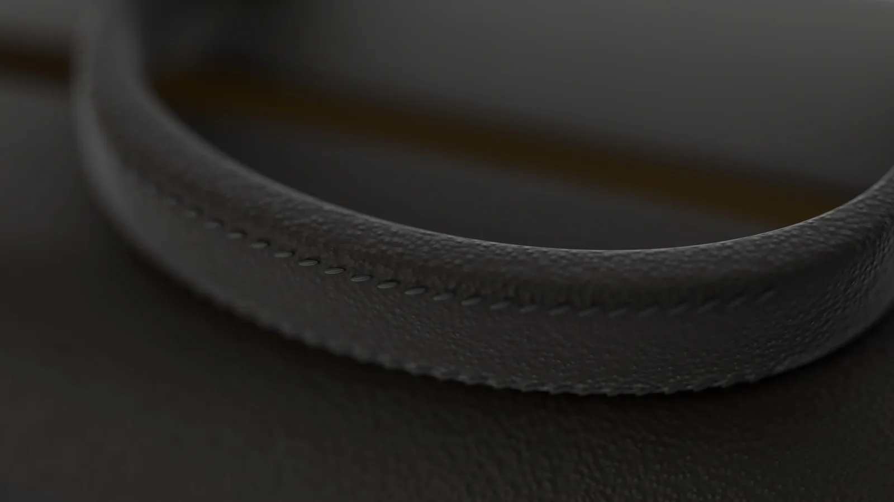
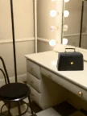

STAND-IN · img/itaoca/front/master.* (departments/apparel/new-pieces-2026-11/build/po-tophandle/site/po_tophandle_front_16k.png; 16K, 15360 × 8640) STAND-IN · img/itaoca/three-quarter/master.* (three-quarter view, 8K; 8K, 7680 × 4320)
STAND-IN · img/itaoca/three-quarter/master.* (three-quarter view, 8K; 8K, 7680 × 4320)
STAND-IN · img/itaoca/open/master.* (open view, 8K; 8K, 7680 × 4320)


Chapter I · Bags
Itaoca
Top-handle bag
The bag carried from the car to the door. Structured black calfskin, a rolled handle, the house brass clasp, and cream suede waiting inside.
- LEATHER
- BLACK CALFSKIN
- DIMENSIONS
- 30.6 × 19.8 × 10 CM
- LINING
- CREAM SUEDE
- CLASP
- BRASS, THE Ö ENGRAVED
Price on request
ReserveMade to order. Delivery date confirmed by email.
Delivered in the house box.
Details
- Made to order
- Made to order. We email your delivery date once production is confirmed. Cancel for a full refund any time before production starts.
- Returns
- Exchanges within 14 days of delivery, unused and with tags. Returns
- Care
- Wipe with a soft dry cloth. Keep from rain and heat; if it gets wet, let it dry slowly away from a radiator. Store in its dust bag, stuffed with tissue, out of the light. Leather cleaning by a specialist only. Care
- Size
- The measurements

STAND-IN · img/itaoca/world/master.* (C8: the last frame, the world plate (the dressing table); 8K, 5760 × 7680)Where it is going · C8
The dressing table
The chair, pulled out.
On the screen in the film, the picture is tomorrow: each piece in the place it is going, with one place kept for someone.
The maker’s notes
Itaoca, the PÖ top-handle
- It begins as black calfskin on a trapezoid: 31 cm at the base, 26.2 cm at the top, 19.8 cm tall.
- One flap runs from a hinge on the top to half the height of the front.
- A panel of 7 by 2 squares is pressed into the flap, 0.55 mm deep, with 8 mm of plain leather round it. The flap alone carries the monogram.
- The handle is rolled, 18 by 16 mm, and rises 11 cm above the top on two 22 mm brass rings.
- It closes on the house disc, 24 mm, the mark engraved 16 mm tall.
Inside it: cream suede, on the body and under the flap.
Read the poem